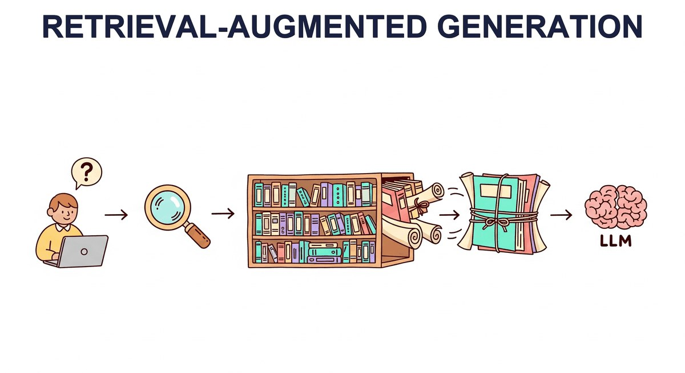

"The best answer is not always inside the model. Sometimes the smartest thing an AI can do is look it up."
RAG, Bookishly-Wise AI Agent
You can find relevant chunks (Chapter 22). Now you feed them to an LLM. This chapter is retrieval-augmented generation: the architecture, the failure modes (lost-in-the-middle, irrelevant retrievals, conflicting sources), the advanced patterns (HyDE, multi-query, query rewriting, reranking, parent-doc retrieval), and when long-context windows make RAG obsolete (rarely, it turns out).
Chapter Overview
Ask GPT-5 about a press release from yesterday. It cannot tell you. Ask it about your company's internal expense policy. It guesses, badly. Even with a 2-million-token context window, no foundation model trains fast enough or knows enough private data to answer those questions on its own. RAG is the fix that ate enterprise AI: retrieve the right paragraph at query time, paste it into the prompt, and let the model reason over fresh evidence instead of stale parameters. By 2026 RAG underpins every search assistant, every customer-support bot, and most of the agent stacks in Part VI. This chapter is the canonical guide to building one that actually works.
This chapter covers the complete RAG landscape, from fundamental architectures through advanced retrieval techniques. You will learn how to build ingestion pipelines, implement query transformations, combine dense and sparse retrieval, and leverage knowledge graphs for structured reasoning. The chapter also explores agentic RAG systems that can decompose complex queries, perform iterative research, and synthesize information from multiple sources.
On the structured data side, you will learn how LLMs can query databases through text-to-SQL, process tabular data, and combine structured and unstructured retrieval. Finally, the chapter surveys the major RAG frameworks (LangChain, LlamaIndex, Haystack) that provide production-ready tooling for building retrieval-augmented applications.
Retrieval-augmented generation is one of the most widely deployed LLM patterns in production. By combining retrieval with generation, you can reduce hallucinations, keep responses current, and ground outputs in authoritative sources. This chapter is central to building the knowledge-intensive applications covered in Part VI and Part VIII.
- Design and implement end-to-end RAG pipelines including document ingestion, chunking, embedding, and retrieval
- Apply advanced retrieval techniques such as HyDE, multi-query expansion, cross-encoder re-ranking, and fusion retrieval (building on prompt engineering principles)
- Construct and query knowledge graphs for structured reasoning, including GraphRAG with community detection
- Build agentic RAG systems capable of query decomposition, iterative research, and multi-source synthesis
- Implement text-to-SQL pipelines for structured data retrieval with schema linking and error correction
- Evaluate RAG system quality using faithfulness, relevance, and answer correctness metrics
- Compare and use RAG orchestration frameworks (LangChain, LlamaIndex, Haystack) for production applications
- Diagnose and fix common RAG failure modes including lost-in-the-middle effects, retrieval drift, and context window overflow
Prerequisites
- Chapter 31: Embeddings & Vector Databases (embedding models, similarity search, vector stores)
- Chapter 11: LLM APIs (calling OpenAI, Anthropic, and other providers programmatically)
- Chapter 12: Prompt Engineering (system prompts, few-shot examples, structured outputs)
- Familiarity with Python, including working with APIs and JSON data
- Basic understanding of SQL and relational databases (for the structured-data RAG section in this chapter)
Sections
- 32.1a RAG Foundations: Pipeline & Why It Beats Fine-Tuning The retrieve-and-generate pipeline: knowledge-storage spectrum, ingestion, context-window management, and the RAG vs. fine-tuning decision. Entry
- 32.1b RAG Indexing, Evaluation & Long-Context Tradeoff Indexing strategies for large corpora, evaluation and common failure modes, and how RAG compares to long-context windows now that frontier models offer 200K+ tokens. Entry
- 32.2 Deep Research & Agentic RAG Naive RAG performs a single retrieval step, but complex research questions require multiple rounds of searching, reading, reflecting, and refining. Advanced
- 32.3 Structured Data & Text-to-SQL Most enterprise knowledge lives in databases, not documents. Advanced
- 32.4 Source Attribution and Citation in RAG A RAG system that generates correct answers but cannot tell you where those answers came from is only half-built. Advanced
Stand up an end-to-end RAG pipeline against a real documentation site (FastAPI, LangChain, PyTorch, or your team's wiki). By the end you will have a working CLI that answers grounded questions with citations, plus a small evaluation harness to compare retrieval strategies. This is the practical artifact that backs the rest of Part VII.
- Step 1: Ingest. Pick a docs site (say
fastapi.tiangolo.com). Crawl withtrafilaturaorscrapy, save 50 to 200 pages as Markdown. Confirm you have clean text (no nav cruft, no duplicate footers). - Step 2: Chunk & embed. Use
langchain_text_splitters.MarkdownHeaderTextSplitterwith chunk size 800 tokens, overlap 100. Embed withtext-embedding-3-small(orBAAI/bge-base-en-v1.5locally). Persist tochromadbin./rag_index/. - Step 3: Query loop. Build a Python CLI: user types a question, you retrieve top-5 chunks (cosine similarity), assemble a prompt with chunks plus the original sources, call GPT-4o-mini (or Claude Haiku 4.6), and print the answer with citation footnotes
[1] [2]. - Step 4: Add reranking. Wire in
cohere.rerankorcross-encoder/ms-marco-MiniLM-L-6-v2as a second stage: retrieve top-20, rerank, keep top-5. Side-by-side compare answers on 5 hand-written questions; note where reranking helps (specificity) and where it hurts (latency). - Step 5: Evaluate with Ragas. Write 20 question-answer pairs against the docs. Run
ragasto score faithfulness, answer relevance, and context precision. Baseline (no rerank) vs. reranked: which wins, and by how much? - Step 6: Library shortcut. Re-implement the whole pipeline in <15 lines using
LlamaIndex(VectorStoreIndex.from_documents+as_query_engine). Confirm answers are comparable to your hand-rolled version. This is the "Right Tool" payoff: you now understand what the abstraction hides.
Expected time: 3 to 4 hours. Difficulty: intermediate. Artifact: a runnable CLI + Ragas score sheet you can publish on GitHub.
What's Next?
Next: Chapter 33: Cross-Modal Reasoning and Multimodal RAG. Text-only RAG is a special case. What if your knowledge base is half scanned PDFs, half product photos, and half tables? Chapter 33 covers joint embedding spaces, when to retrieve vs. reason directly, vision-based document retrieval (ColPali, DSE), and the cost-latency-quality matrix for production multimodal RAG.